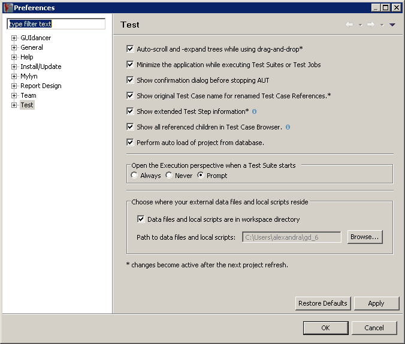

Figure 3.30: Preference Dialog
|

|
In the preferences dialog, select Test from the tree on the left hand side.
From this page, you can configure your preferences for:
- Auto-scrolling and -expanding:
- When the checkbox is marked, the views and browsers automatically scroll in the direction you move the mouse when you are dragging and dropping. Trees will also be automatically expanded when you hover over them while dragging items.
- Minimizing the ITE :
- When the checkbox is marked, the ITE is automatically minimized when test execution begins. This is useful if you are letting tests run on the same machine you are specifying on.
- AUT confirmation dialog:
- When the checkbox is marked, a dialog appears to check if you are sure when you click the "stop AUT " button.
- Original Test Case name:
- When the checkbox is activated, you can see the original name of a referenced Test Case in brackets behind a new name you enter for the Test Case . This can help you to see and search for Test Cases you have reused.
- Test Step information:
- When this checkbox is activated, you see the details about the Test Step (the component name and type, and the action) in square brackets behind the Test Step name. If you do not want to see these details, you can deactivate this checkbox.
- Show referenced children:
- When this option is not active, you can only see referenced parent Test Cases in the Test Case Browser . The referenced Test Cases contained in these Test Cases are not displayed. This action can be useful if you want to improve the speed of working with the ITE .
- Project auto load:
- If you have selected a Project to be automatically loaded 3.5.4.1, then you can stop the auto-loading by deactivating the checkbox.
- Delay for content assist in the Component Names View :
- Enter the amount of time in milliseconds you want to wait after each character entry before displaying content assist in the Component Names View . Increase the delay to see the content assist less frequently. You can see the content assist at any time by pressing »CTRL+SPACE«.
- Switching to the Functional Test Execution Perspective :
- When the test begins, the ITE can automatically change to the Functional Test Execution Perspective . You can choose to always be asked, to always change, or to never change.
- Data files location:
- You can specify a location where external data files (e.g. Excel files) are held, or use the workspace directory as the base location.
![\includegraphics[height=2cm]{lightbulb}](img2.jpg) |
The advantage of using the workspace as a location for your data files is that you can view these in the navigator view directly in the ITE . Windows users can even open Excel files from the ITE using the In-Place editor. |
Copyright BREDEX GmbH 2014. Made available under the Eclipse Public License v1.0.